title: "Physical AI와 VLA" tags: - youtube - 연구자료 source: "https://www.youtube.com/watch?v=-RIGcHPUQsQ" channel: "AIN Lab" video_id: "-RIGcHPUQsQ" date: 2026-09-16
Physical AI와 VLA
영상 정보
- 채널: AIN Lab
- 게시일: 2026-09-15
- 길이: 24분 1초
- 링크: https://www.youtube.com/watch?v=-RIGcHPUQsQ
- 발표자: 이상호 (고려대학교 전자정보공학과, 지능형 신경공학 연구실 저널 미팅)
<div relative; width: 100%; padding-bottom: 56.25%; height: 0; overflow: hidden;"> <iframe absolute; top: 0; left: 0; width: 100%; height: 100%;" src="https://www.youtube.com/embed/-RIGcHPUQsQ" frameborder="0" allowfullscreen></iframe> </div>
한줄 요약
화제가 된 휴머노이드 데모는 대부분 보상함수로 학습된 강화학습 결과일 뿐 "상황 이해"가 없다는 문제의식에서 출발해, LLM·VLM의 지능을 로봇에 이식하려는 VLA(Vision-Language-Action) 연구가 SayCan → Open X-Embodiment → RT-2/OpenVLA를 거쳐 어떻게 등장했는지, 그리고 OpenVLA의 네 가지 한계를 극복하기 위한 최신 여섯 갈래 연구 방향을 정리한 저널 미팅 발표다.
핵심 장면 분석
00:00:10 — 발표 표지
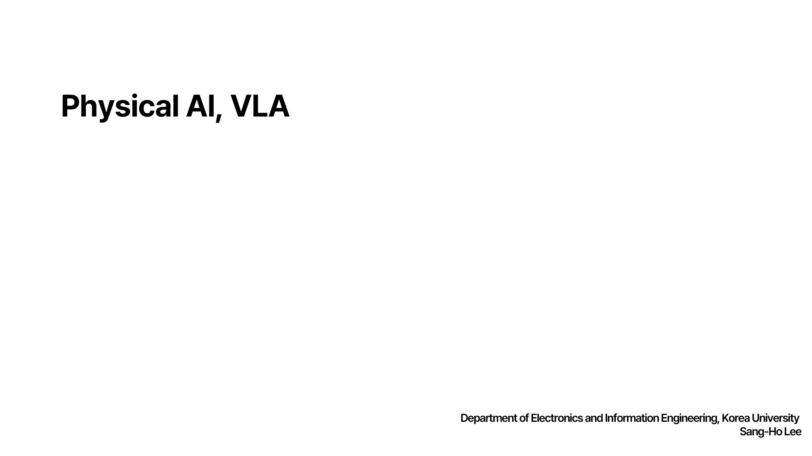
고려대학교 전자정보공학과 이상호 발표자의 "Physical AI, VLA" 표지 슬라이드. 발표자는 이 자료가 개별 논문 리뷰가 아니라 부산 차세대 융합기술 세미나 발표를 기반으로 피지컬 AI와 VLA의 발전 과정을 순차적으로 정리한 것이라고 밝힌다.00:00:37 — 바이럴 휴머노이드 데모
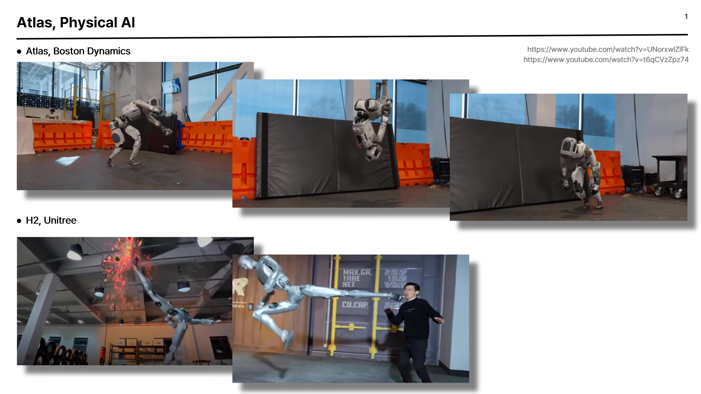
Boston Dynamics의 Atlas가 관절을 사람과 다른 방향으로 꺾으며 움직이는 장면과, Unitree H2가 발차기를 하는 장면이 나란히 배치되어 있다. 발표자는 이런 화려한 데모들이 "진정한 의미의 피지컬 AI로 보기는 어렵다"는 문제 제기로 발표를 연다.00:01:30 — 화려한 데모의 정체는 강화학습
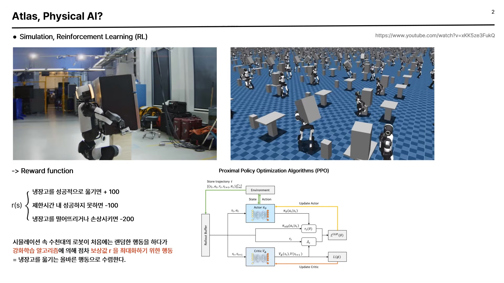
왼쪽은 실제 Atlas가 냉장고를 옮기는 영상, 오른쪽은 시뮬레이션 안에 Atlas와 냉장고를 대량으로 복제해 놓은 병렬 학습 환경이다. 아래에는 보상함수가 명시되어 있다 — 냉장고를 성공적으로 옮기면 +100, 제한시간 내 성공하지 못하면 −100, 냉장고를 떨어뜨리거나 손상시키면 −200. 오른쪽에는 PPO(Proximal Policy Optimization) 알고리즘 도식이 붙어 있다. 슬라이드 하단 결론은 "강화학습 알고리즘에 의해 점차 보상값이 큰 쪽으로 학습하기 위한 행동 = 냉장고를 옮기는 올바른 행동으로 수렴한다"이다. 백덤블링이나 발차기도 성공 +100 / 실패 −1 형태로 학습 방식은 동일하다.00:02:58 — 대비되는 예시: Helix의 정리 작업
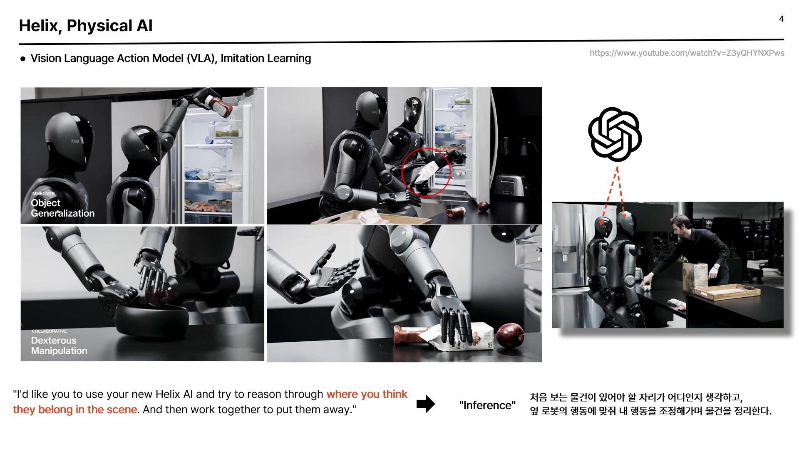
"Vision Language Action Model (VLA), Imitation Learning"이라는 부제 아래 Figure의 Helix 로봇이 물건을 정리하는 장면들이 배치되어 있고, 슬라이드에 인용된 명령은 "I'd like you to use your new Helix AI and try to reason through where you think they belong in the scene. And then work together to put them away."이다. 처음 보는 물건이 냉장고·서랍·바구니 중 어디에 들어가야 할지 판단하고, 옆 로봇의 행동에 맞춰 자기 행동을 실시간으로 조정한다. 느리고 덜 화려하지만 상황 이해가 개입한다는 점에서 앞의 강화학습 데모와 대비된다.00:03:44 — 피지컬 AI의 두 갈래
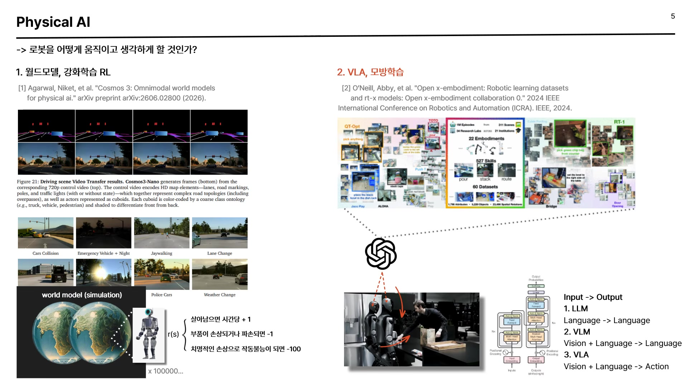
"로봇을 어떻게 움직이고 생각하게 할 것인가?"에 대한 두 방향이 좌우로 나뉘어 있다. 왼쪽 1. 월드모델 + 강화학습 RL은 Cosmos 3 논문의 장면 생성 결과(Emergency Vehicle + Night, Jaywalking, Lane Change, Police Cars, Weather Change)를 보여주며, 정교한 월드모델 시뮬레이션 안에 로봇을 수십만 대 올려놓고r(s) = 살아남으면 시간당 +1 / 부품이 손상되거나 파손되면 −1 / 치명적인 손상으로 작동불능이 되면 −100 의 보상을 주면 "세상에서 살아남는 법"을 배울 것이라는 논리다. 오른쪽 2. VLA, 모방학습은 Open X-Embodiment 데이터셋 모자이크와 함께 입출력 계보를 정리한다 — LLM: Language → Language, VLM: Vision + Language → Language, VLA: Vision + Language → Action.
00:05:25 — 진영을 대표하는 기업
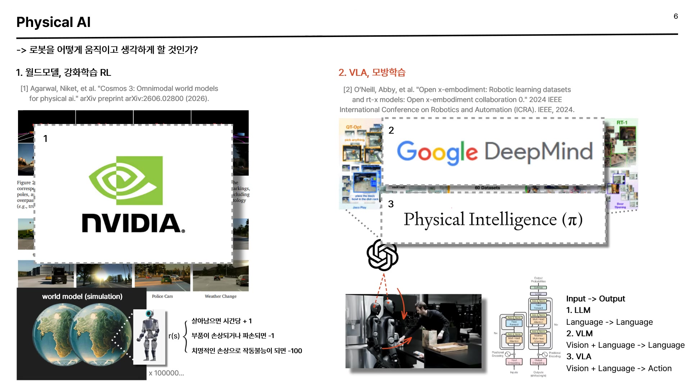
같은 슬라이드 위에 기업 로고가 덧씌워진다. 월드모델·강화학습 방향에는 NVIDIA, VLA 방향에는 Google DeepMind와 Physical Intelligence(π)가 대표로 배치되어 있다.00:05:41 — LLM에서 VLM으로
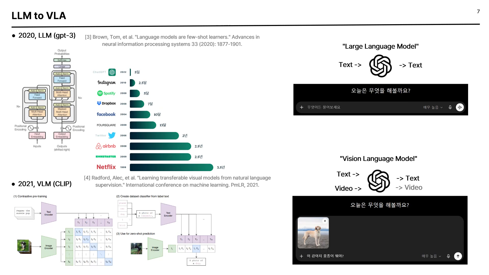
"LLM to VLA" 슬라이드. 2020년 GPT-3(Brown et al., Language models are few-shot learners)가 Text → Text의 Large Language Model로, 2021년 CLIP(Radford et al.)이 Text/Video → Text/Video의 Vision Language Model로 이어지는 흐름이 도식과 함께 정리되어 있다. 왼쪽 하단에는 CLIP의 contrastive pre-training 구조도가 붙어 있다.00:06:10 — VLA 개념의 출현
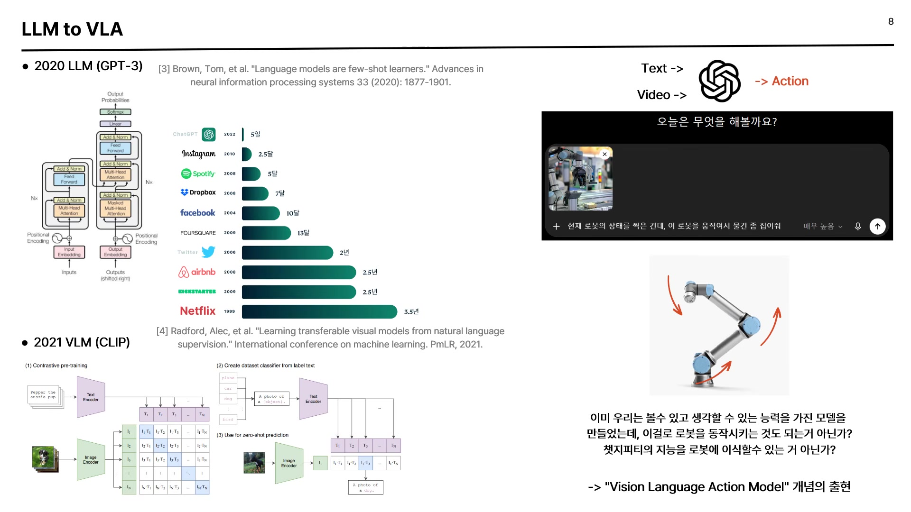
같은 슬라이드의 다음 단계로, 우상단 출력이-> Action으로 바뀌고 로봇 팔 그림이 추가된다. 슬라이드에 적힌 문제의식은 "이미 우리는 볼 수 있고 생각할 수 있는 능력을 가진 모델을 만들었는데, 이걸로 로봇을 동작시키는 것도 되는 게 아니냐? 챗GPT의 지능을 로봇에 이식할 수 있는 게 아니냐?"이며, 결론은 "Vision Language Action Model" 개념의 출현이다.
00:06:39 — SayCan: 언어모델과 실행 가능성의 결합
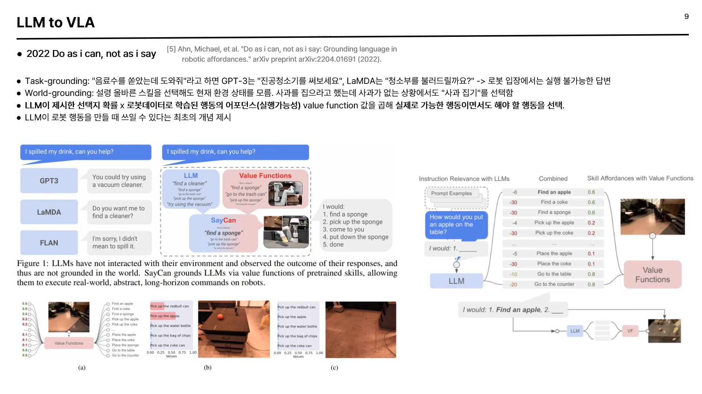
2022년 Do as I can, not as I say(Ahn et al.) 슬라이드. 언어모델이 "말만 되면 아무 답이나 내놓는" 구조적 문제를 Task-grounding / World-grounding으로 구분해 설명한다. "음료수를 쏟았는데 도와줘"라는 입력에 GPT-3는 "진공청소기를 써보면?", LaMDA는 "청소부를 불러드릴까요?"처럼 로봇 입장에서 실행 불가능한 답을 낸다. 해법은 LLM이 제시한 선택지 확률과 로봇이 실제로 해당 행동을 수행할 수 있는지를 나타내는 Value Function(실행가능성) 값을 곱해, 실행 가능하면서 맥락상 해야 할 행동을 고르게 하는 것이다. 우측 표에는 LLM 단독 점수, Combined 점수, Value Function 점수가 나란히 비교되어 있다.00:08:04 — Scaling Laws와 Emergent Abilities
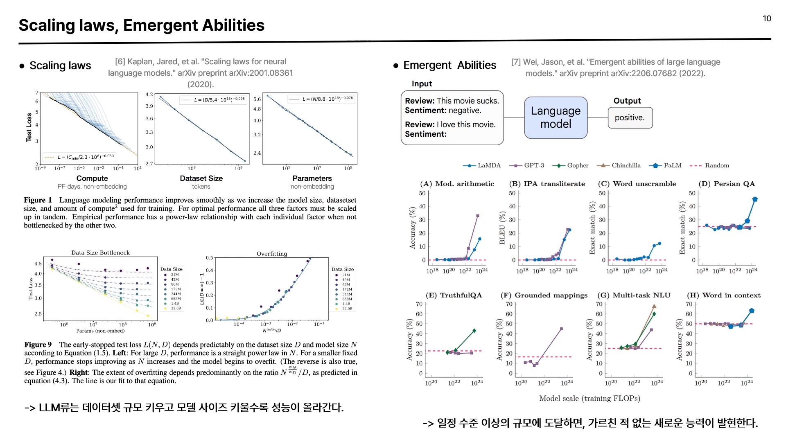
왼쪽은 Kaplan et al.의 스케일링 법칙 그래프(Compute / Dataset Size / Parameters 대비 Test Loss가 멱법칙으로 감소), 오른쪽은 Wei et al.의 창발 능력 그래프들(Mod. arithmetic, IPA transliterate, Word unscramble, Persian QA, TruthfulQA, Grounded mappings, Multi-task NLU, Word in context)로 일정 규모 이상에서 성능이 급격히 꺾여 올라가는 형태를 보여준다. 슬라이드 결론은 "LLM류는 데이터셋 규모와 모델 사이즈를 키울수록 성능이 올라간다", "일정 수준 이상의 규모에 도달하면 가르친 적 없는 새로운 능력이 발현된다"이다. 이 두 성질이 VLA 연구에도 그대로 가설로 이식된다.00:08:34 — 대규모 로봇 데이터셋과 첫 VLA 모델들
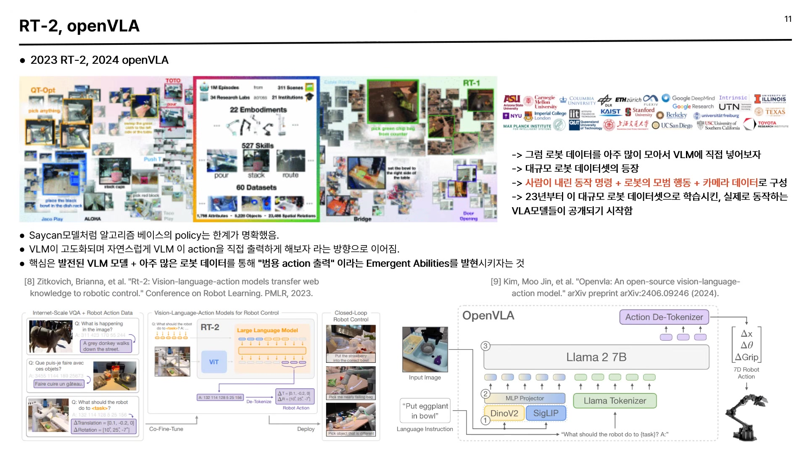
Open X-Embodiment 데이터셋 모자이크(여러 기관의 로봇 데이터가 합쳐진 대형 컬렉션)와 참여 기관 로고들이 상단을 채우고, 오른쪽에는 "그럼 로봇 데이터를 아주 많이 모아서 VLM에 직접 넣어보자 → 대규모 로봇 데이터셋 등장 → 사람의 내면 동작 영상 + 로봇 모방 행동 + 카메라 데이터로 구성 → 23년부터 이 대규모 로봇 데이터셋으로 학습시킨, 실제로 동작하는 VLA 모델들이 공개되기 시작"이라는 흐름이 적혀 있다. 하단에는 RT-2(Zitkovich et al., 2023)와 OpenVLA(Kim et al., 2024)의 구조도가 나란히 배치된다. 슬라이드의 핵심 문장은 "발전된 VLM 모델 + 아주 많은 로봇 데이터를 통해 '범용 action 출력'이라는 Emergent Abilities를 발현시키자"이다.00:09:45 — OpenVLA의 내부 구조
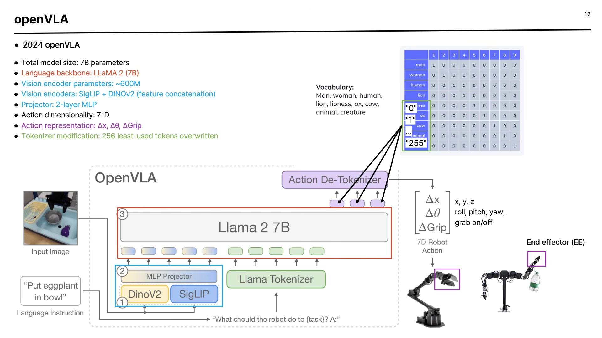
OpenVLA의 사양이 항목별로 정리되어 있다 — Total model size: 7B parameters, Language backbone: LLaMA 2 (7B), Vision encoder parameters: ~600M, Vision encoders: SigLIP + DinoV2 (feature concatenation), Projector: 2-layer MLP, Action dimensionality: 7-D, Action representation: Δx, Δθ, ΔGrip, Tokenizer modification: 256 least-used tokens overwritten. 구조도는 입력 이미지와 언어 지시("Put eggplant in bowl")가 DinoV2/SigLIP → MLP Projector → Llama 2 7B로 들어가고, 출력이 단어 대신 Action De-Tokenizer를 거쳐 엔드이펙터의 x·y·z, roll·pitch·yaw, grab on/off로 나오는 흐름을 보여준다. 우측 표는 어휘 토큰 자리에 0~255 값이 배정되는 방식을 시각화한 것이다.00:10:43 — OpenVLA의 네 가지 한계
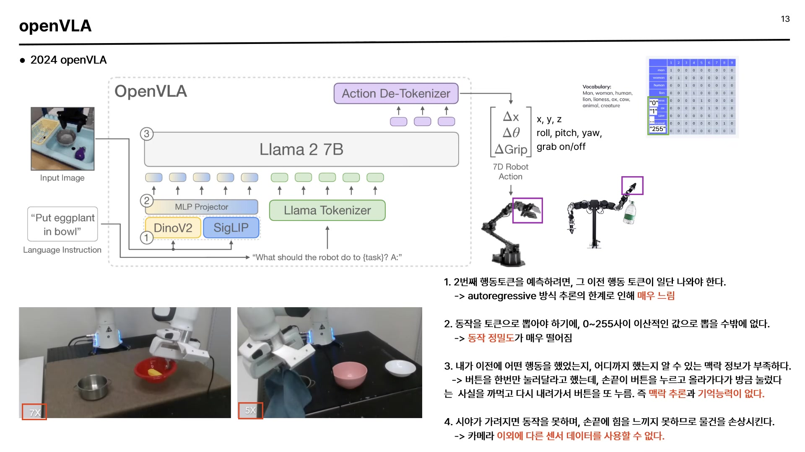
슬라이드에 번호로 정리된 네 가지 문제와, 하단에 버튼을 누르는 로봇 실패 장면 두 컷이 붙어 있다.- 느리다 — 2번째 행동 토큰을 예측하려면 이전 행동 토큰이 먼저 나와야 하는 autoregressive 방식의 구조적 한계.
- 정밀도가 낮다 — 동작을 토큰으로 뽑아야 하고 0~255 사이 이산 값으로만 표현된다.
- 맥락 기억이 없다 — 방금 버튼을 눌렀다는 사실을 잊고 다시 내려가 또 누른다. 누르려고 내려갈 때 찍힌 사진과 누르고 올라갈 때 찍힌 사진이 비슷하기 때문에, 별도의 기억 능력이 없으면 필연적으로 생기는 오류다.
- 시야가 가려지면 못 하고, 손끝 힘을 모르니 물건을 손상시킨다 — 카메라 이외의 센서 데이터를 사용할 수 없다.
00:12:10 — OpenVLA 이후 여섯 갈래
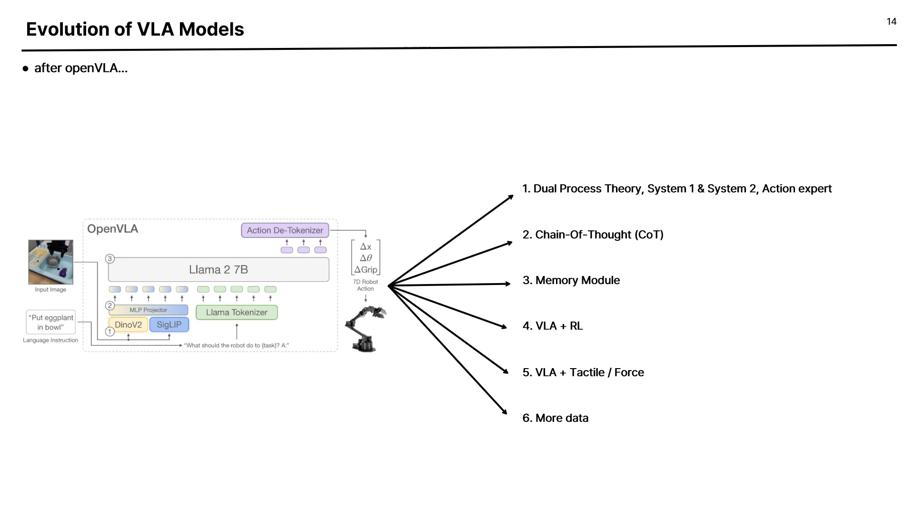
"Evolution of VLA Models — after openVLA…" 슬라이드에서 OpenVLA 구조로부터 여섯 개의 화살표가 뻗어 나온다. 1. Dual Process Theory, System 1 & System 2, Action expert / 2. Chain-Of-Thought (CoT) / 3. Memory Module / 4. VLA + RL / 5. VLA + Tactile / Force / 6. More data. 이후 발표는 이 여섯 가지를 순서대로 다룬다.00:12:28 — 방향 1: 이중 처리 이론
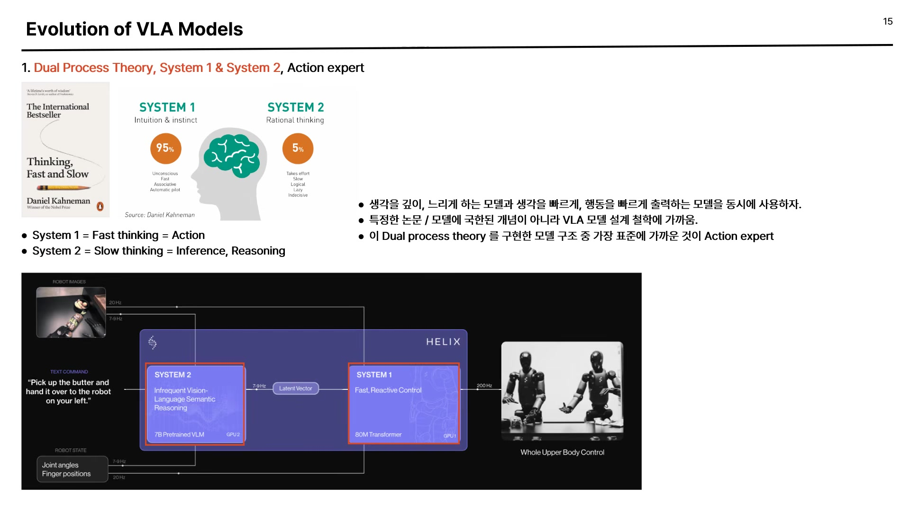
카너먼의 Thinking, Fast and Slow 표지와 System 1(Fast thinking = Action) / System 2(Slow thinking = Inference, Reasoning) 대비도가 놓이고, 아래에는 Helix가 System 1과 System 2를 분리한 구조도("Pick up the butter and hand it over to the robot on your left")가 있다. 슬라이드 메모는 "특정 논문·모델에 국한된 개념이 아니라 VLA 모델 설계 철학으로 기능하며, 이 Dual process theory를 구현한 모델 구조 중 가장 표준에 가깝게 쓰이는 것이 Action expert"라는 점을 강조한다.00:13:04 — Action Expert와 Action Chunk (π0)
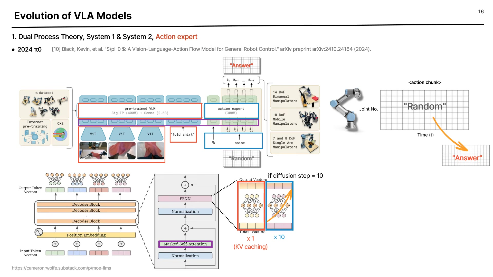
2024년 π0(Black et al., A Vision-Language-Action Flow Model for General Robot Control) 구조도. 사전학습 VLM 옆에 별도의 action expert 블록이 붙고, 우측에는 Joint No. × Time(t) 격자가 "Random"에서 "Answer"로 수렴하는 그림이 있다 — 시간에 따른 연속 관절값을 2차원 표로 그리면 이미지 형태가 되고, 이를 한 번에 예측하면 일정 구간의 액션을 통째로 뽑는 action chunk가 된다. 하단 도식은 Decoder Block과 Masked Self-Attention을 거쳐if diffusion step = 10, x1 (KV caching) / x10으로 갈라지는 흐름을 보여준다. 트랜스포머 내부 MLP층을 분리해 전체 모델보다 빠른 주파수로 돌리는 것이 action expert의 핵심이다.
00:13:59 — 방향 2: CoT-VLA
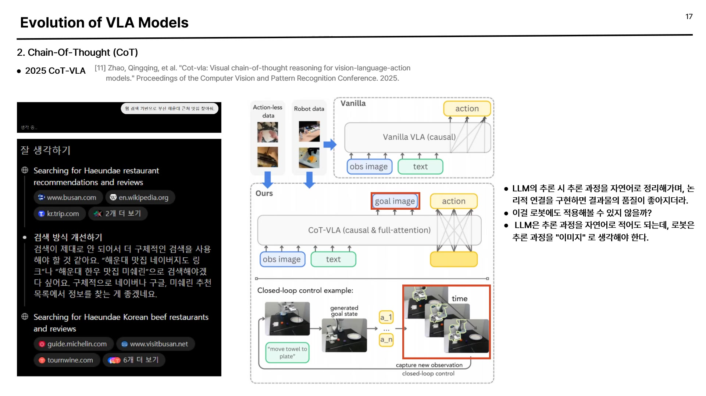
2025년 CoT-VLA(Zhao et al., CVPR) 슬라이드. 왼쪽은 일반 LLM의 사고 과정 예시(해운대 맛집 검색을 단계적으로 개선하는 화면), 오른쪽은 Vanilla VLA (causal)와 Ours: CoT-VLA (causal & full-attention) 구조 비교다. 핵심 차이는 obs image + text에서 바로 action으로 가지 않고 중간에 goal image를 예측한다는 점이다. 슬라이드 메모는 "LLM은 추론 과정을 자연어로 적어도 되지만, 로봇은 출력이 액션이므로 중간 과정을 자연어로 적으면 정보 손실이 생긴다 → 로봇은 추론 과정을 '이미지'로 생각해야 한다"이다. 하단 Closed-loop control example은 생성된 goal state를 기준으로 새 관측을 받아 반복하는 폐루프를 보여준다.00:15:02 — 방향 3: 메모리 모듈 (MEM)
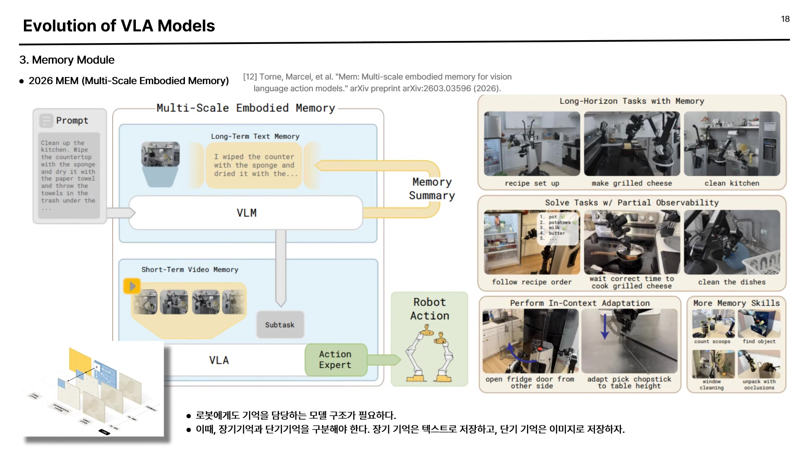
2026년 MEM(Torne et al., Multi-Scale Embodied Memory) 구조도. 상단 경로는 Long-Term Text Memory로, VLM이 매 사이클마다 자신이 어디까지 했는지 기록하는 Memory Summary를 생성하고 다음 사이클 입력으로 되먹인 뒤 지금 해야 할 Subtask를 텍스트로 VLA에 내려보낸다. 하단 경로는 Short-Term Video Memory로, 최근 구간의 비디오를 압축한 피처를 VLA 입력에 함께 넣는다. 오른쪽에는 이 구조로 가능해진 과제들이 세 묶음으로 제시된다 — Long-Horizon Tasks with Memory(recipe set up, make grilled cheese, clean kitchen), Solve Tasks w/ Partial Observability, Perform In-Context Adaptation. 슬라이드 결론은 "장기 기억은 텍스트로 저장하고, 단기 기억은 이미지로 저장하자"이다.00:16:37 — 방향 4: VLA + 강화학습 (π*0.6)
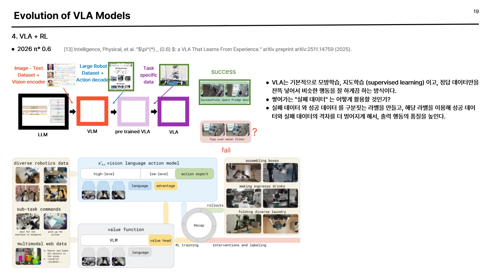
2026년 π0.6(Physical Intelligence, a VLA That Learns From Experience*) 슬라이드. 상단은 LLM → VLM → pre-trained VLA → VLA로 이어지는 학습 단계와 success/fail 갈림길을, 하단은 로봇 데이터가 value function을 담당하는 VLM을 먼저 통과해 advantage 신호를 만들고 그것이 태그로 붙어 VLA에 들어가는 흐름을 보여준다. 슬라이드 메모는 "VLA는 기본적으로 모방학습·지도학습(supervised learning)이라 정답 데이터만을 전부 넣어서 비슷한 행동을 잘 하게끔 하는 방식이며, 빠지는 것은 '실패 데이터'다 → 실패 데이터와 성공 데이터를 구분하는 라벨을 만들고 해당 라벨을 이용해 성공 데이터와 실패 데이터의 격차를 더 벌어지게 해서 출력 행동의 품질을 높인다"이다.00:17:46 — 방향 5: 촉각·힘 모달리티 (ForceVLA2)
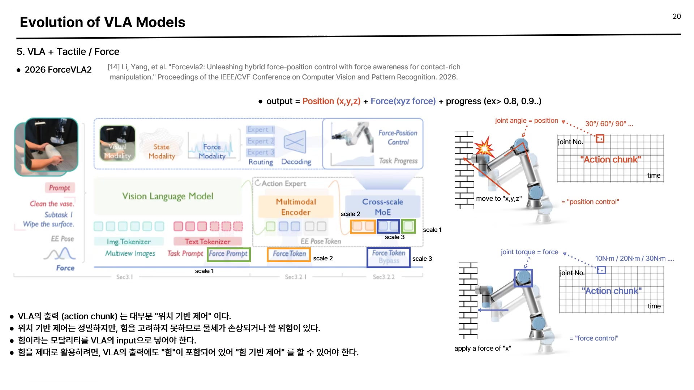
2026년 ForceVLA2(Li et al., CVPR) 구조도. 출력이Position (x,y,z) + Force(xyz force) + progress (ex> 0.8, 0.9…)로 정의되고, Vision Language Model 아래 Action Experts 안에 Multimodal Encoder와 Cross-scale MoE가 배치되어 Force Token/Force Prompt를 함께 처리한다. 오른쪽에는 같은 action chunk 격자가 "position control"용과 "force control"용 두 벌로 그려져, joint torque + force까지 출력하는 구조임을 보여준다. 슬라이드 정리는 "VLA의 출력(action chunk)은 대부분 '위치 기반 제어'다 → 위치 기반 제어는 정밀하지만 힘을 고려하지 못해 물체가 손상되거나 할 위험이 있다 → 힘이라는 모달리티를 VLA의 input으로 넣어야 하고, 출력에도 '힘'이 포함되어야 힘 기반 제어를 할 수 있다"이다.
00:20:13 — 촉각 전문가의 비대칭 주파수 (T-Rex)
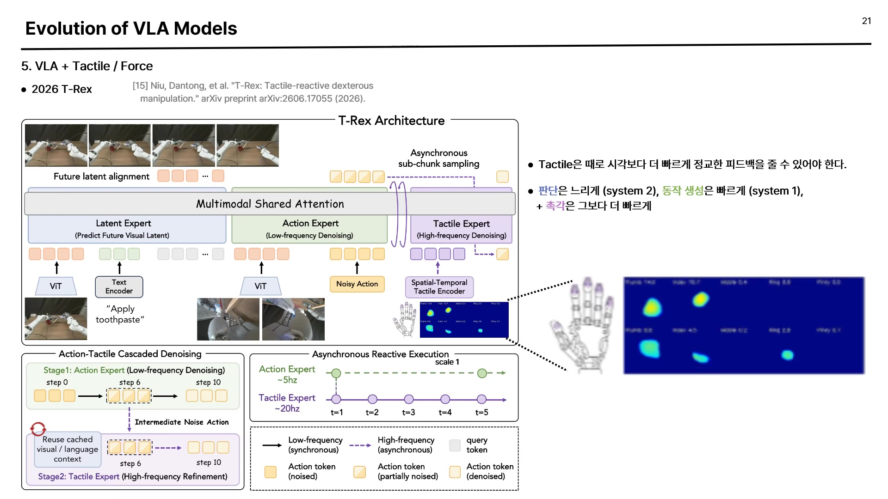
2026년 T-Rex(Niu et al., Tactile-reactive dexterous manipulation) 아키텍처. Multimodal Shared Attention을 공유하면서 Latent Expert(Predict Future Visual Latent), Action Expert(Low-Frequency Denoising), Tactile Expert(High-Frequency Denoising) 세 전문가가 갈라지고, 우측의 손 모양 히트맵이 촉각 센서 입력("Apply toothpaste")을 나타낸다. 하단 Asynchronous Reactive Execution 도식에는 Action Expert ~5Hz와 Tactile Expert ~20Hz가 t+1…t+5에 걸쳐 비동기로 실행되는 타임라인이 그려져 있다. 슬라이드 메모는 "Tactile은 시각보다 더 빠르고 정교한 피드백을 줄 수 있어야 한다 / 판단은 느리게(system 2), 동작 생성은 빠르게(system 1), 촉각은 그보다 더 빠르게"이다. 촉각 전문가도 어텐션 레이어 자체는 공유하기 때문에 큰 행동 생성부터 미세 보정까지 촉각이 반영된다.00:21:14 — 방향 6: 데이터 합성과 증강 (RLDX-1)
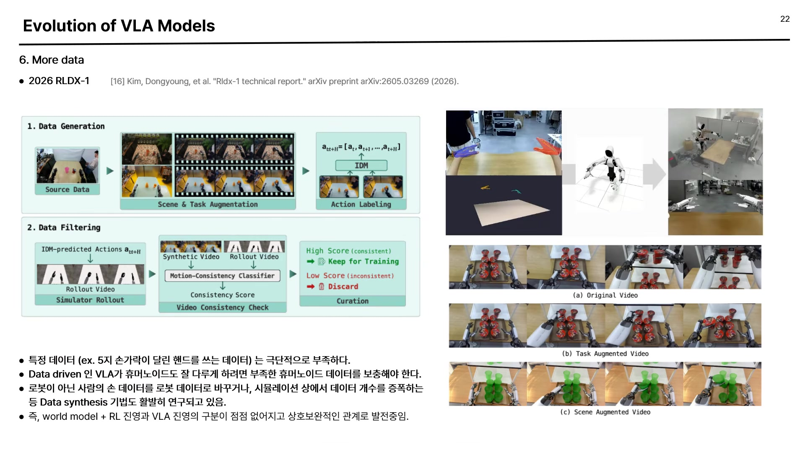
2026년 RLDX-1 테크니컬 리포트(Kim et al.)에서 가져온 파이프라인. 발표자는 이를 "한국의 리얼드라는 기업"이 낸 모델로 소개한다. 1. Data Generation은 Source Data → Scene & Task Augmentation → Action Labelling으로, 비디오 생성 모델을 백본으로 써서 원본 비디오의 태스크를 바꾸거나 물체 종류 같은 장면을 바꿔 증강한다. 2. Data Filtering은 IDM-predicted Actions와 Motion-Consistency Classifier, Video Consistency Check를 거쳐 Consistency Score가 높으면 Keep for Training, 낮으면 Discard로 분기한다. 오른쪽에는 (a) Original Video, (b) Task Augmented Video, (c) Scene Augmented Video 비교 컷이 있다. 슬라이드 마지막 줄은 "즉, world model + RL 진영과 VLA 진영의 구분이 점점 없어지고 상호보완적인 관계로 발전 중임"이다.00:22:37 — 결론: 인조 인간을 설계하는 일
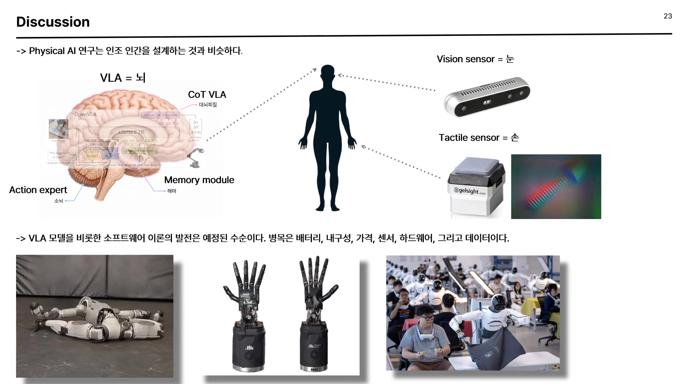
"Physical AI 연구는 인조 인간을 설계하는 것과 비슷하다"는 문장과 함께 뇌 단면도에 VLA 구성요소를 대응시킨 그림이 놓인다 — VLA = 뇌, CoT VLA = 전전두엽에 해당하는 영역, Action expert = 소뇌, Memory module = 해마. 오른쪽에는 Vision sensor = 눈, Tactile sensor = 손이 실제 센서 사진과 함께 대응되어 있다. 하단 결론은 "VLA 모델을 비롯한 소프트웨어 이론의 발전은 예정된 수순이다. 병목은 배터리, 내구성, 가격, 센서, 하드웨어, 그리고 데이터이다"이며, 누워 있는 휴머노이드·로봇 핸드·작업 현장 사진이 배치되어 있다.주요 내용 요약
핵심 포인트
- 화제가 된 Atlas의 백덤블링이나 Unitree H2의 발차기는 모두 시뮬레이션 안에서 보상함수를 최대화하도록 학습된 강화학습 결과다. 로봇은 그 행동을 왜 해야 하는지 이해하지 못하며, 발표자는 이를 "진정한 의미의 피지컬 AI"와 구분한다.
- 피지컬 AI는 크게 두 갈래로 나뉜다. 월드모델 + 강화학습(NVIDIA)은 세상 자체를 정교하게 시뮬레이션한 뒤 생존 보상을 주는 방향이고, VLA + 모방학습(Google DeepMind, Physical Intelligence)은 방대한 로봇 데이터를 언어모델에 밀어 넣어 챗GPT의 지능을 로봇에 이식하는 방향이다.
- VLA는 LLM(Language→Language) → VLM(Vision+Language→Language) → VLA(Vision+Language→Action)라는 계보의 자연스러운 귀결이다.
- 언어모델을 로봇에 붙일 때의 최초 장벽은 "말만 되면 아무 답이나 내놓는" 문제였고, SayCan(2022)이 실행가능성 value function을 곱하는 방식으로 이를 해결하면서 VLA 연구가 본격화됐다.
- 스케일링 법칙과 창발 능력이라는 LLM의 두 성질이 VLA에도 가설로 이식되어 "로봇 데이터를 잔뜩 모으면 가르치지 않은 행동도 하게 될 것"이라는 방향이 세워졌고, Open X-Embodiment 같은 대규모 공유 데이터셋과 RT-2·OpenVLA가 등장했다.
- 특히 OpenVLA는 구조와 가중치가 모두 공개되고 변형·응용이 쉬운 오픈소스 기반이어서, 이 모델을 기점으로 VLA 연구 물량이 폭발적으로 늘었다.
기술적 내용
- 로봇 데이터의 형태: 명령을 올바르게 수행하는 로봇을 촬영한 동영상 + 그때 녹화된 관절값. VLA는 매 순간의 이미지 프레임과 사용자 명령을 받아 바로 다음 순간의 정답 행동을 출력하며, 명령을 완수할 때까지 이 추론을 계속 반복한다.
- OpenVLA 구조: LLaMA 2 7B 백본 + SigLIP·DinoV2 비전 인코더(~600M) + 2-layer MLP projector. 출력 어휘 토큰 중 가장 덜 쓰이는 256개를 덮어써서 단어 대신 숫자를 뱉게 하고, 이를 De-Tokenizer로 풀어 7-D 엔드이펙터 행동(Δx, Δθ, ΔGrip)을 만든다.
- OpenVLA의 네 가지 한계: (1) autoregressive 직렬 출력이라 느림 (2) 0~255 이산 토큰이라 정밀도가 낮음 (3) 작업 맥락 기억이 없어 방금 한 행동을 반복 (4) 시야 가림에 취약하고 힘을 모름.
- Action chunk + Action expert (π0, 2024): 시간축 관절값을 2차원 표로 보고 이미지처럼 한 번에 예측해 일정 구간 액션을 통째로 뽑고(action chunk), 트랜스포머 내부 MLP층을 분리해 전체 모델보다 빠른 주파수로 돌린다(action expert). 결과적으로 지연 없이 더 높은 제어 주파수를 얻는다.
- CoT-VLA (2025): 복잡한 작업을 서브태스크로 쪼개 순서대로 출력하되, 중간 추론을 자연어가 아니라 목표 이미지로 예측해 정보 손실을 피한다.
- MEM (2026): 장기 기억은 별도 VLM이 매 사이클 갱신하는 텍스트 Memory Summary로, 단기 기억은 최근 3초 비디오를 시공간 컨볼루션으로 압축한 피처로 구현한다. 개수를 세며 물건을 꺼내거나 주방 전체를 정리하는 장기 과제가 가능해진다.
- *π0.6 (2026)**: 로봇 데이터를 VLA에 넣기 전에 value function VLM에 통과시켜 방금 행동이 성공에 도움이 되었는지 판단하고, 이를 이진 advantage 신호로 만들어 태그로 붙인다. Action expert가 실패 행동의 분포에서 멀어지도록 학습되어, 버려지던 실패 데이터까지 활용된다.
- ForceVLA2 / T-Rex (2026): 힘·촉각 센서를 별도 인코더로 받고 출력에 목표 토크까지 포함해 힘 기반 제어를 가능하게 한다. T-Rex는 여기서 한 발 더 나아가 Action Expert ~5Hz보다 빠른 Tactile Expert ~20Hz를 두어 실시간 보정을 수행하며, 두 전문가는 MLP만 분리하고 어텐션 레이어는 공유한다.
- RLDX-1 (2026): 비디오 생성 모델을 백본으로 태스크·장면을 바꿔 데이터를 증강하고, 증강 결과를 시뮬레이션에서 동작시켜 consistency로 자동 필터링한다. 비디오 생성 모델이 곧 월드모델이라는 점에서 두 진영의 경계가 흐려지는 사례다.
시사점과 한계
- 발표자는 VLA의 구조 발전이 인간의 뇌를 부품별로 재구성하는 방향으로 수렴한다고 본다. Action expert는 소뇌, CoT는 전전두엽, 메모리 모듈은 해마, 촉각 센서는 손, 카메라는 눈에 대응한다는 정리다.
- 촉각·힘 모달리티 추가는 다른 방향들과 달리 명확한 트레이드오프를 안는다. 센서 종류마다 모델을 따로 학습시켜야 해서 "어떤 하드웨어에도 적용 가능한 파운데이션 모델"이라는 VLA의 근본 목표와 충돌한다. 다만 로봇이 산업 현장에서 일상으로 넘어오려면 반드시 거쳐야 할 과정이라는 것이 발표자의 판단이다.
- 소프트웨어의 발전 속도를 하드웨어가 따라가지 못하고 있다. 사람 동작을 정교하게 재현하는 로봇 핸드와 휴머노이드가 이제야 활발히 출시되는 단계이고, 배터리·내구성·센서 신뢰도 등 물리적으로 검증해야 할 부분이 많이 남아 있다.
- 월드모델이든 VLA든 결국 데이터 주도 방식이므로, 향후 몇 년간은 기존 AI 산업과 마찬가지로 자본과 데이터를 가진 기업이 연구를 선도할 것이라는 전망으로 발표가 마무리된다.
- 자료의 한계: 이 노트의 인용은 한국어 자동 생성 자막(수동 자막 없음)과 슬라이드 화면에 근거한다. 자동 자막 특성상 고유명사 표기 오류가 있었으며(예: "채치T"→ChatGPT, "파이스타 0.6"→π*0.6), 해당 부분은 슬라이드에 적힌 표기를 우선해 정정했다. 발표에서 언급된 논문 목록은 영상 설명란에 [1]~[16]으로 정리되어 있다.